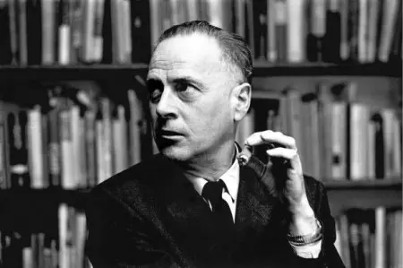

Herbert Marshall McLuhan, CC, was a Canadian educator, philosopher, and scholar
a professor of English literature, a literary critic, and a communications theorist.
McLuhan's work is viewed as one of the cornerstones of the study of media theory.
No matter how powerful or persuasive the message, he said, it’s the media that have changed our patterns of thought and behaviour. Now, in a world dominated by the Internet and social media, McLuhan’s revolutionary ideas are as hotly debated as they were in the 1960s, when he became an academic star known worldwide for his catchy slogans “the medium is the message,” “the global village,” and “hot and cool media.”
No matter how powerful or persuasive the message, he said, it’s the media that have changed our patterns of thought and behaviour. Now, in a world dominated by the Internet and social media, McLuhan’s revolutionary ideas are as hotly debated as they were in the 1960s, when he became an academic star known worldwide for his catchy slogans “the medium is the message,” “the global village,” and “hot and cool media.”